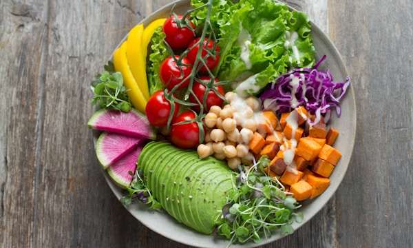
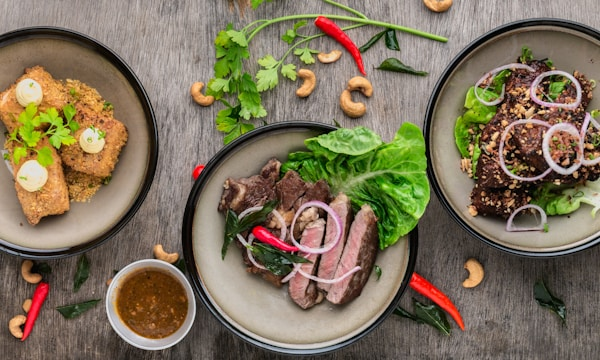
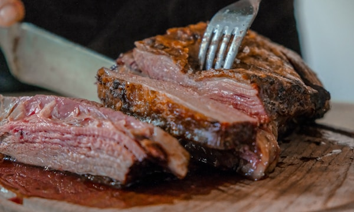
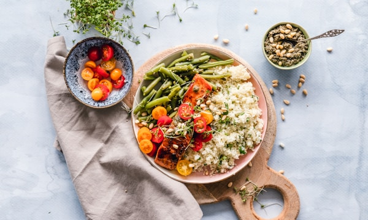
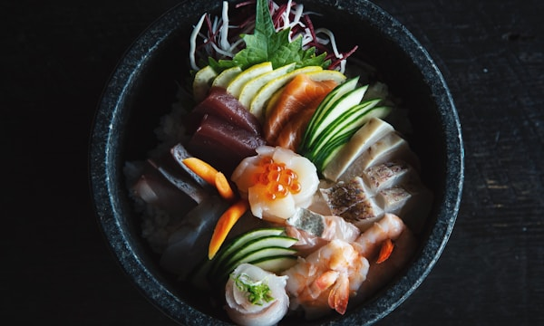
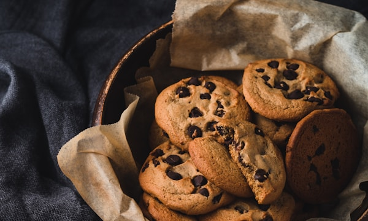
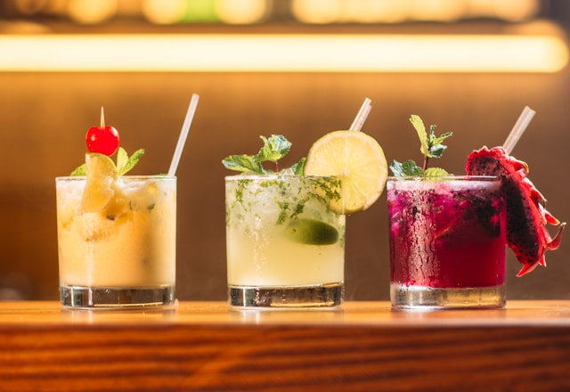

Pratos Clássicos do Brasil
Sabores que contam a história e a cultura do nosso povo

Feijoada
O prato mais tradicional do Brasil. Feijão preto cozido com carnes suínas, acompanhado de arroz, couve, farofa e laranja.

Acarajé
Bolinho de feijão-fradinho frito no azeite de dendê, recheado com vatapá, caruru e camarões. Patrimônio imaterial da Bahia.

Churrasco Gaúcho
Tradição do Rio Grande do Sul exportada para o mundo. Carnes assadas no espeto sobre brasa, com chimichurri e pão de alho.
Culinária Regional
Cada região do Brasil tem pratos únicos que refletem sua história

Tacacá
Caldo quente servido em cuia com tucupi, tapioca, jambu e camarões. Sabor inconfundível da Amazônia.

Moqueca
Peixe ou frutos do mar cozidos com dendê ou azeite, leite de coco, tomate e coentro. Há versões baianas e capixabas.

Pão de Queijo
Iguaria mineira feita com polvilho e queijo minas, com casca crocante e interior macio. Perfeito para o café da manhã.
Bebidas e Sobremesas

Caipirinha
A bebida mais famosa do Brasil é feita com cachaça, limão, açúcar e gelo. Simples, refrescante e reconhecida mundialmente como símbolo da cultura brasileira.
Existem versões com frutas como maracujá, morango, manga e caju — todas deliciosas!
🍮 Pudim de Leite
Sobremesa cremosa com calda de caramelo, presente em todo o Brasil.
🍫 Brigadeiro
Bolinha de chocolate condensado com granulado. O docinho mais amado do país.
🥥 Cocada
Doce nordestino feito de coco ralado com açúcar. Há versões brancas, pretas e de amendoim.